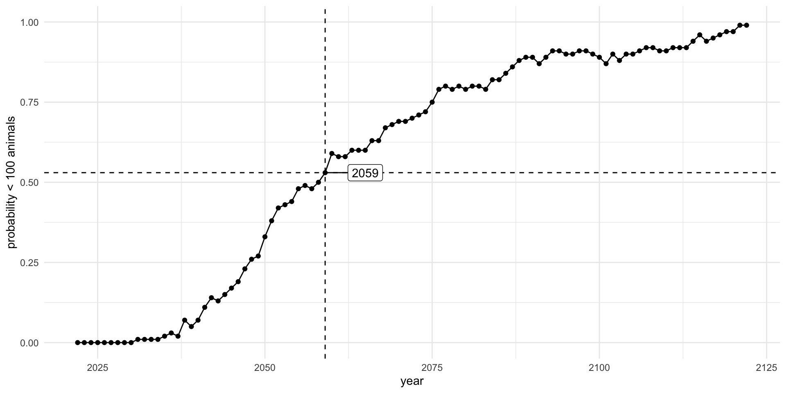

MAR 536 Lab 6
2023-02-22
Lab schedule
1/18: Introduction to R and R Studio, working with data
1/25: Intro to Visualization
2/01: Probability, linear modeling
2/08: Data wrangling, model summaries
2/15: Simulation, Resampling
2/22: Iteration
3/01: Creating functions, debugging
3/15: Flex: more modeling (brms, glmmTMB)
3/29: Spatial data or tidymodeling
Acknowledgements
Reducing code duplication
Easier to see the intent of your code, eyes are drawn to what’s different, not what stays the same.
Easier to respond to changes, only need to make changes in one place, rather than every place you copied-and-pasted.
Likely to have fewer bugs because each line of code is used in more places.
How? Iteration (today) & Functions (next wk)
Iteration
When you need to do the same thing to multiple inputs: repeating the same operation on different columns, or on different datasets.
Two main paradigms:
1. imperative programming
2. functional programming
Pivot tables & loops
Looping
Vector operations can do many things and are quick.
But sometimes we need to do more.
Loops in R are of this form:
This is a very flexible structure, try the following:
Looping through species
Imagine we need to calculate the mean flipper and bill lengths for every species in the palmerpenguins data set.
NB: We already know better ways to do this using summarize().
Common way to use loops
#define the elements to loop over
species <- sort(unique(penguins$species))
#define how many times to do the loop
nspecies <- length(species)
#create a place to store results
mean_mass <- vector(length=nspecies)
#get loopy
for (isp in 1:nspecies) {
species.data <- penguins[penguins$species==species[isp], ]
mean_mass[isp] <- mean(species.data$body_mass_g, na.rm = TRUE)
print(mean_mass[isp])
cat("Running species ", isp,"\n")
}A lot of this code is book-keeping rather than the thing we want to do.
purrr
for loops are simple, but they require lots of code that is mostly book-keeping.
Attention is then on this rather than the action the code is doing.
Functional programming abstracts the book-keeping of the loop to keep attention on the code that matters.
Series of apply functions in base R. (apply, tapply, sapply, lapply)
These all have slightly differences about how they are used.
purrr package is the tidyverse solution to the apply functions.
Basics of purrr
The map function is the workhorse of purrr.
e.g.
map
Basic syntax:
map by default returns a list. However we can specify the type of output:
map_dbl returns real numbers
map_lgl returns logicals
map_chr returns characters
map_int returns integers
map_df returns a dataframe

cheatsheat: github.com/rstudio/cheatsheets/blob/master/purrr.pdf
Shortcuts
The syntax for creating an anonymous function in R is quite verbose so purrr provides a convenient shortcut: a one-sided formula.
Shortcuts 2
Extracting summary statistics
Extracting named components is a common operation, so can use a string instead.
Exercise 1
Write code that uses one of the map functions to:
- Compute the mean of every numeric column in
palmerpenguins::penguins.
- Determine the type of each column in
nycflights13::flights.
- Compute the number of unique values in each column of
palmerpenguins::penguins.
05:00
Extending to multiple input lists
map2 allows you to map over two sets of inputs.
e.g. generate 3 sets of 5 normal random variables, with the means & standard deviations different in each set.

More than 2 inputs, use pmap
e.g. same problem as previous, but now n varies in each set.
Safest to use named arguments with pmap, as it will do positional matching if not.

Debugging using safely
Handling errors can be tricky to diagnose with map.
It’s not as obvious when/where things break.
Can use safely(). e.g.
safe_log <- safely(log, otherwise = NA_real_)
#safe_log return a NA if log() returns error, plus error msg.
list("a", 10, 100) |>
map(safe_log) |> #<<
transpose() |>
simplify_all()
## $result
## [1] NA 2.302585 4.605170
##
## $error
## $error[[1]]
## <simpleError in .Primitive("log")(x, base): non-numeric argument to mathematical function>
##
## $error[[2]]
## NULL
##
## $error[[3]]
## NULLExercise 2
Create a data frame of samples from the
palmerpenguins::penguinsdataset, that contains 3 Adelies, 6 Gentoos, and 4 Chinstraps.
(your new data frame will have 13 rows, with 3, 6, and 4 of the three species) (hint: use a nested dataframe,map2(), andslice_sample())We have data from several years of crab surveys. The data for each year is contained in separate “.csv” files.
We would like to read these data into R, and combine them into a single data frame so we can inspect and plot them.
- Write code to read these data into R, and combine them into a single dataframe.
b-d. Then produce 3 plots (of your choice) summarizing the full dataset. Include “b”, “c”, and “d” in the title of your plots.
For hints see next slide.
Hints for exercise 2:
- you can use the following to get an object containing a list of files in a folder
::: {.cell}
data_path = "../data/crabs" # directory where the files are located
files <- dir(path = data_path, pattern = "*.csv",
full.names = TRUE) # names of files ending in ".csv"
files
## [1] "../data/crabs/CRABS_2001.csv" "../data/crabs/CRABS_2002.csv"
## [3] "../data/crabs/CRABS_2003.csv" "../data/crabs/CRABS_2004.csv"
## [5] "../data/crabs/CRABS_2005.csv" "../data/crabs/CRABS_2006.csv"
## [7] "../data/crabs/CRABS_2007.csv" "../data/crabs/CRABS_2008.csv"
## [9] "../data/crabs/CRABS_2009.csv" "../data/crabs/CRABS_2010.csv"
## [11] "../data/crabs/CRABS_2011.csv" "../data/crabs/CRABS_2012.csv"
## [13] "../data/crabs/CRABS_2013.csv" "../data/crabs/CRABS_2014.csv"
## [15] "../data/crabs/CRABS_2015.csv" "../data/crabs/CRABS_2016.csv"
## [17] "../data/crabs/CRABS_2017.csv" "../data/crabs/CRABS_2018.csv"
## [19] "../data/crabs/CRABS_2019.csv"::: - look at the help for ‘dir’ for additional functionality
Steller sea lion pups revisited
We have data on Steller sea lion pup counts over time at a bunch of rookeries in Alaska.

The number of data points for each rookery is not the same.
We want to investigate the annual trend in counts for each rookery.
We want to plot the slopes of the regressions using a histogram.
We want to obtain confidence intervals of the slope estimates using bootstrapping.
ssl <- read_csv("../data/SSLpupcounts.csv")
slice(ssl,1:3)
## # A tibble: 3 × 43
## sitename `1961` `1965` `1967` `1968` `1971` `1973` `1975` `1976` `1978` `1979`
## <chr> <dbl> <dbl> <dbl> <dbl> <dbl> <dbl> <dbl> <dbl> <dbl> <dbl>
## 1 ADAK/LA… NA NA NA NA NA NA NA NA NA 20
## 2 ADUGAK NA NA NA NA NA NA NA NA NA NA
## 3 AGATTU NA NA NA NA NA NA NA NA NA 183
## # … with 32 more variables: `1981` <dbl>, `1982` <dbl>, `1984` <dbl>,
## # `1985` <dbl>, `1986` <dbl>, `1987` <dbl>, `1988` <dbl>, `1989` <dbl>,
## # `1990` <dbl>, `1991` <dbl>, `1992` <dbl>, `1993` <dbl>, `1994` <dbl>,
## # `1995` <dbl>, `1996` <dbl>, `1997` <dbl>, `1998` <dbl>, `2000` <dbl>,
## # `2001` <dbl>, `2002` <dbl>, `2003` <dbl>, `2004` <dbl>, `2005` <dbl>,
## # `2007` <dbl>, `2008` <dbl>, `2009` <dbl>, `2010` <dbl>, `2011` <dbl>,
## # `2012` <dbl>, `2013` <dbl>, `2014` <dbl>, `2015` <dbl>
ssl_long <- ssl |>
pivot_longer(names_to = "year",
values_to = "count",
-sitename) |>
drop_na() |>
mutate(year = as.numeric(year)) |>
filter(year >= 2000,
count > 0) |>
mutate(log_count = log(count),
year2 = year-2000) |>
I()ssl_models <- ssl_long |>
group_by(sitename) |>
nest() |>
mutate(model = map(data, ~lm(log_count ~ year2, data = .))) |>
mutate(results = map(model, tidy))
ssl_models
## # A tibble: 53 × 4
## # Groups: sitename [53]
## sitename data model results
## <chr> <list> <list> <list>
## 1 ADAK/LAKE POINT <tibble [7 × 4]> <lm> <tibble [2 × 5]>
## 2 ADUGAK <tibble [8 × 4]> <lm> <tibble [2 × 5]>
## 3 AGATTU/CAPE SABAK <tibble [10 × 4]> <lm> <tibble [2 × 5]>
## 4 AGATTU/GILLON POINT <tibble [8 × 4]> <lm> <tibble [2 × 5]>
## 5 AKUN/BILLINGS HEAD <tibble [7 × 4]> <lm> <tibble [2 × 5]>
## 6 AKUTAN/CAPE MORGAN <tibble [8 × 4]> <lm> <tibble [2 × 5]>
## 7 AMCHITKA/COLUMN ROCK <tibble [5 × 4]> <lm> <tibble [2 × 5]>
## 8 ATKINS <tibble [9 × 4]> <lm> <tibble [2 × 5]>
## 9 ATTU/CAPE WRANGELL <tibble [8 × 4]> <lm> <tibble [2 × 5]>
## 10 AYUGADAK <tibble [7 × 4]> <lm> <tibble [2 × 5]>
## # … with 43 more rowsssl_slopes <- ssl_models |>
select(sitename, results) |>
unnest() |>
filter(term == "year2")
ssl_slopes
## # A tibble: 53 × 6
## # Groups: sitename [53]
## sitename term estimate std.error statistic p.value
## <chr> <chr> <dbl> <dbl> <dbl> <dbl>
## 1 ADAK/LAKE POINT year2 -0.0232 0.00738 -3.14 0.0256
## 2 ADUGAK year2 0.0517 0.00633 8.17 0.000181
## 3 AGATTU/CAPE SABAK year2 -0.112 0.00877 -12.8 0.00000133
## 4 AGATTU/GILLON POINT year2 -0.0733 0.0168 -4.35 0.00482
## 5 AKUN/BILLINGS HEAD year2 0.0851 0.0190 4.49 0.00648
## 6 AKUTAN/CAPE MORGAN year2 0.0399 0.00602 6.63 0.000566
## 7 AMCHITKA/COLUMN ROCK year2 -0.107 0.0333 -3.21 0.0488
## 8 ATKINS year2 0.0315 0.0207 1.52 0.172
## 9 ATTU/CAPE WRANGELL year2 -0.0715 0.0176 -4.06 0.00667
## 10 AYUGADAK year2 -0.0525 0.0163 -3.22 0.0234
## # … with 43 more rowsresidual bootstrapping
resample residuals from the original models to obtain bootstrapped confidence intervals of the slopes.
nboot <- 100
# first extract a table of fitted values and residuals using augment
ssl_boot <- ssl_models |>
mutate(tbl = map(model, augment)) |>
select(sitename, tbl)
ssl_boot
## # A tibble: 53 × 2
## # Groups: sitename [53]
## sitename tbl
## <chr> <list>
## 1 ADAK/LAKE POINT <tibble [7 × 8]>
## 2 ADUGAK <tibble [8 × 8]>
## 3 AGATTU/CAPE SABAK <tibble [10 × 8]>
## 4 AGATTU/GILLON POINT <tibble [8 × 8]>
## 5 AKUN/BILLINGS HEAD <tibble [7 × 8]>
## 6 AKUTAN/CAPE MORGAN <tibble [8 × 8]>
## 7 AMCHITKA/COLUMN ROCK <tibble [5 × 8]>
## 8 ATKINS <tibble [9 × 8]>
## 9 ATTU/CAPE WRANGELL <tibble [8 × 8]>
## 10 AYUGADAK <tibble [7 × 8]>
## # … with 43 more rowsresidual bootstrapping
nboot <- 100
# first extract a table of fitted values and residuals using augment
ssl_boot <- ssl_models |>
mutate(tbl = map(model, augment)) |>
select(sitename, tbl)|>
unnest(cols=c(tbl)) |>
janitor::clean_names() |>
ungroup() |>
I()
ssl_boot
## # A tibble: 372 × 9
## sitename log_count year2 fitted resid hat sigma cooksd std_resid
## <chr> <dbl> <dbl> <dbl> <dbl> <dbl> <dbl> <dbl> <dbl>
## 1 ADAK/LAKE POI… 5.89 2 5.90 -0.00375 0.452 0.0868 0.00176 -0.0653
## 2 ADAK/LAKE POI… 5.86 4 5.85 0.00614 0.277 0.0868 0.00166 0.0929
## 3 ADAK/LAKE POI… 5.74 5 5.83 -0.0888 0.216 0.0709 0.231 -1.29
## 4 ADAK/LAKE POI… 5.82 9 5.74 0.0886 0.155 0.0722 0.141 1.24
## 5 ADAK/LAKE POI… 5.76 10 5.71 0.0509 0.184 0.0821 0.0595 0.726
## 6 ADAK/LAKE POI… 5.73 11 5.69 0.0454 0.232 0.0829 0.0673 0.667
## 7 ADAK/LAKE POI… 5.52 14 5.62 -0.0985 0.483 0.0533 1.46 -1.76
## 8 ADUGAK 5.03 0 4.99 0.0416 0.412 0.0857 0.155 0.666
## 9 ADUGAK 5.08 2 5.09 -0.0172 0.269 0.0886 0.0112 -0.247
## 10 ADUGAK 5.12 4 5.20 -0.0778 0.175 0.0804 0.118 -1.05
## # … with 362 more rowsresidual bootstrapping
# we'll do resampling from the residuals for each year within each rookery
# rather than getting complicated with nested lists, we'll use sample_frac() to do the resamples
tosample <- ssl_boot |>
select(sitename, resid) |>
group_by(sitename)
resamples <-
map_dfr(seq_len(nboot), ~slice_sample(tosample, prop = 1, replace = TRUE)) |>
ungroup() |>
mutate(replicate = rep(1:nboot, each = nrow(tosample)))
resamples
## # A tibble: 37,200 × 3
## sitename resid replicate
## <chr> <dbl> <int>
## 1 ADAK/LAKE POINT 0.0454 1
## 2 ADAK/LAKE POINT 0.0454 1
## 3 ADAK/LAKE POINT 0.0886 1
## 4 ADAK/LAKE POINT 0.0886 1
## 5 ADAK/LAKE POINT -0.00375 1
## 6 ADAK/LAKE POINT 0.00614 1
## 7 ADAK/LAKE POINT 0.0509 1
## 8 ADUGAK 0.0416 1
## 9 ADUGAK -0.0172 1
## 10 ADUGAK 0.0416 1
## # … with 37,190 more rowsresamples contains our bootstraps. Let’s append them to the data frame so we can compute the new data and re-fit the models for each case.
ssl_bootmod <- map_dfr(seq_len(nboot), ~I(ssl_boot)) |>
select(-resid, -sitename) |>
bind_cols(resamples) |>
mutate(log_count = fitted + resid) |>
group_by(sitename, replicate) |>
nest() # now have a data frame with a row for each site & replicate
ssl_bootmod
## # A tibble: 5,300 × 3
## # Groups: sitename, replicate [5,300]
## sitename replicate data
## <chr> <int> <list>
## 1 ADAK/LAKE POINT 1 <tibble [7 × 8]>
## 2 ADUGAK 1 <tibble [8 × 8]>
## 3 AGATTU/CAPE SABAK 1 <tibble [10 × 8]>
## 4 AGATTU/GILLON POINT 1 <tibble [8 × 8]>
## 5 AKUN/BILLINGS HEAD 1 <tibble [7 × 8]>
## 6 AKUTAN/CAPE MORGAN 1 <tibble [8 × 8]>
## 7 AMCHITKA/COLUMN ROCK 1 <tibble [5 × 8]>
## 8 ATKINS 1 <tibble [9 × 8]>
## 9 ATTU/CAPE WRANGELL 1 <tibble [8 × 8]>
## 10 AYUGADAK 1 <tibble [7 × 8]>
## # … with 5,290 more rowsssl_bootmod <- ssl_bootmod |>
mutate(model = map(data, ~lm(log_count ~ year2, data = .))) |> #same code as before to run the models
mutate(coef = map(model, coef)) |>
mutate(slope = map_dbl(coef, pluck, 2)) |>
ungroup()
ssl_bootmod
## # A tibble: 5,300 × 6
## sitename replicate data model coef slope
## <chr> <int> <list> <list> <list> <dbl>
## 1 ADAK/LAKE POINT 1 <tibble [7 × 8]> <lm> <dbl [2]> -0.0256
## 2 ADUGAK 1 <tibble [8 × 8]> <lm> <dbl [2]> 0.0470
## 3 AGATTU/CAPE SABAK 1 <tibble [10 × 8]> <lm> <dbl [2]> -0.120
## 4 AGATTU/GILLON POINT 1 <tibble [8 × 8]> <lm> <dbl [2]> -0.0833
## 5 AKUN/BILLINGS HEAD 1 <tibble [7 × 8]> <lm> <dbl [2]> 0.110
## 6 AKUTAN/CAPE MORGAN 1 <tibble [8 × 8]> <lm> <dbl [2]> 0.0365
## 7 AMCHITKA/COLUMN ROCK 1 <tibble [5 × 8]> <lm> <dbl [2]> -0.114
## 8 ATKINS 1 <tibble [9 × 8]> <lm> <dbl [2]> 0.0339
## 9 ATTU/CAPE WRANGELL 1 <tibble [8 × 8]> <lm> <dbl [2]> -0.0923
## 10 AYUGADAK 1 <tibble [7 × 8]> <lm> <dbl [2]> -0.0618
## # … with 5,290 more rowsssl_bootslopes <- ssl_bootmod |>
group_by(sitename) |> #pull out summaries of the distribution for the slope estimates for plotting
summarize(med = median(slope),
lower = quantile(slope, 0.025),
upper = quantile(slope, 0.975)) |>
I()
ssl_bootslopes
## # A tibble: 53 × 4
## sitename med lower upper
## <chr> <dbl> <dbl> <dbl>
## 1 ADAK/LAKE POINT -0.0220 -0.0345 -0.0122
## 2 ADUGAK 0.0513 0.0398 0.0613
## 3 AGATTU/CAPE SABAK -0.113 -0.126 -0.101
## 4 AGATTU/GILLON POINT -0.0743 -0.0983 -0.0466
## 5 AKUN/BILLINGS HEAD 0.0860 0.0602 0.111
## 6 AKUTAN/CAPE MORGAN 0.0400 0.0299 0.0488
## 7 AMCHITKA/COLUMN ROCK -0.111 -0.151 -0.0510
## 8 ATKINS 0.0295 -0.00745 0.0602
## 9 ATTU/CAPE WRANGELL -0.0729 -0.0924 -0.0397
## 10 AYUGADAK -0.0512 -0.0711 -0.0198
## # … with 43 more rows
accumulate()
We sometimes like to use the output of one iteration as input to the next. e.g. model population dynamics over time, iterated function is annual population update.
\[N_{t+1} = \lambda N_{t} - h_{t}\]
Can achieve this using accumulate().
accumulate(letters[1:10], paste, sep = " + ")
## [1] "a"
## [2] "a + b"
## [3] "a + b + c"
## [4] "a + b + c + d"
## [5] "a + b + c + d + e"
## [6] "a + b + c + d + e + f"
## [7] "a + b + c + d + e + f + g"
## [8] "a + b + c + d + e + f + g + h"
## [9] "a + b + c + d + e + f + g + h + i"
## [10] "a + b + c + d + e + f + g + h + i + j"Population projections
Status for endangered species are often based on a risk evaluation of population projections. We want to project population dynamics forward in time given uncertainty in future dynamics. We want to do this lots of times to quantify the risk of extinction.
Current (2022) estimates of the North Atlantic Right Whale population are 340 individuals. The population has been declining on average around 3% per year since 2011. What is the year in which the probability that the right whale population drops below 100 individuals is at least 50% (P(N<100)>=0.5)?
nsim <- 100
nyr <- 100
initN <- 340
sd_proc <- 0.1
lambda <- 0.97
growth_rates <- map(seq_len(nsim), ~rlnorm(nyr,log(lambda),sd_proc))
# population model
pop_update <- function(N, growth_rate = 1) N*growth_rate
# population projection for each time series of process errors
pop_proj <- tibble(sim = seq_len(nsim)) |>
mutate(popsize = map(growth_rates,~accumulate(., pop_update,
.init = initN))) |>
unnest(cols = c(popsize)) |>
mutate(year = rep(2022:2122, nsim))
pop_proj
## # A tibble: 10,100 × 3
## sim popsize year
## <int> <dbl> <int>
## 1 1 340 2022
## 2 1 316. 2023
## 3 1 308. 2024
## 4 1 359. 2025
## 5 1 360. 2026
## 6 1 369. 2027
## 7 1 354. 2028
## 8 1 429. 2029
## 9 1 444. 2030
## 10 1 456. 2031
## # … with 10,090 more rowsbelow_thresh <- pop_proj |>
group_by(year) |>
summarize(prob_100 = mean(popsize<100))
yr_crash <- filter(below_thresh, prob_100 > 0.5) |> slice(1)
yr_crash
## # A tibble: 1 × 2
## year prob_100
## <int> <dbl>
## 1 2059 0.54
below_thresh
## # A tibble: 101 × 2
## year prob_100
## <int> <dbl>
## 1 2022 0
## 2 2023 0
## 3 2024 0
## 4 2025 0
## 5 2026 0
## 6 2027 0
## 7 2028 0
## 8 2029 0
## 9 2030 0
## 10 2031 0
## # … with 91 more rows
library(ggrepel)
below_thresh |>
ggplot() +
aes(x = year,
y = prob_100) +
geom_point() +
geom_line() +
labs(x = "year",
y = "probability < 100 animals") +
ylim(0,1) +
theme_minimal() +
geom_vline(data = yr_crash, aes(xintercept = year), lty = 2) +
geom_hline(data = yr_crash, aes(yintercept = prob_100), lty = 2) +
geom_label_repel(data = yr_crash, aes(label = year), nudge_x = 6)The while loop
Occasionally we don’t know how many times to execute the loop.
Can use a while loop, which executes a series of statements for as long as some condition remains true.
The general syntax is:
The while loop
If there are 7,500 snow leopards in year 2023 and they are declining at 5% per year, in what year will they fall below 500 individuals?
Pro-tip: when you end up in an infinite loop with no stopping point, press <ESC> to stop it running!
Exercise 3: Snow Lepoards
Assume that the annual growth rate of the snow leopard population is lognormally distributed with a mean of 0.95 and log-standard deviation of 0.1.
Use a while loop (hint: re-use the code on the previous slide and add the annual growth rate change to the population update equation), and plot a distribution over 1,000 simulations of the year in which the population falls below 500 animals.
Notes on for loops
for() loops are used in R code much less often than in compiled languages.
Code that takes a ‘whole object’ view is likely to be both clearer and faster in R.
Other looping facilities include repeat, apply, tapply, lapply, sapply.
The break statement can be used to terminate any loop, possibly abnormally.
This is the only way to terminate repeat loops.
The next statement can be used to discontinue one particular cycle and skip to the “next”.
Improving speed of loops
Looping over very large data sets can sometimes become slow in R. Overcome by:
- create storage objects apriori (don’t grow objects).
- eliminate certain operations in loops or
- avoidg loops over the data-intensive dimension in an object altogether.
- the latter can be achieved by performing mainly vector-to-vecor or matrix-to-matrix computations (often > 100x faster than
for()orapply()ormap()).
Make use of existing speed-optimized R functions (e.g.: rowSums, rowMeans, table) or write your own fast functions.
Lab Exercise 4/4
data/eukaryotes.tsv contains a NCBI Eukaryotic genome dataset, with basic information about the genomic content of all eukaryotes that were uploaded to the NCBI Genome database.
It contains accession numbers, information about the quality of the genome and stats such a average genome size and GC-content.
Use glimpse() and other data exploration to get familiar with the data. Then use map_* functions to answer the following:
- How many different organisms are there in the dataset?
- How many different institutes (centers) submitted a genome?
- The data seem to be grouped in groups. How many groups are there?
- How many sub groups are there?
- How many different organisms are there per group?
- How many different institutes (centers) submitted a genome per group?
- How many sub groups are there per group?
Lab Exercise 4 continued…
We might hypothesisze that “The bigger the size of a genome, the higher the number of proteins”.
- Fit a linear model of
log10_proteins ~ log10_size_mbfor each group.
- Extract the
R^2for each model and print these for each group.
- Assess the validity of your modeling approach.
- Obtain and plot predictions for each group for genome sizes 0.5, 123, and 500 MB.
- How do you interpret the results in terms of the original hypothesis?
BONUS use residual bootstrapping to obtain distributions for the predictions made in part 11.